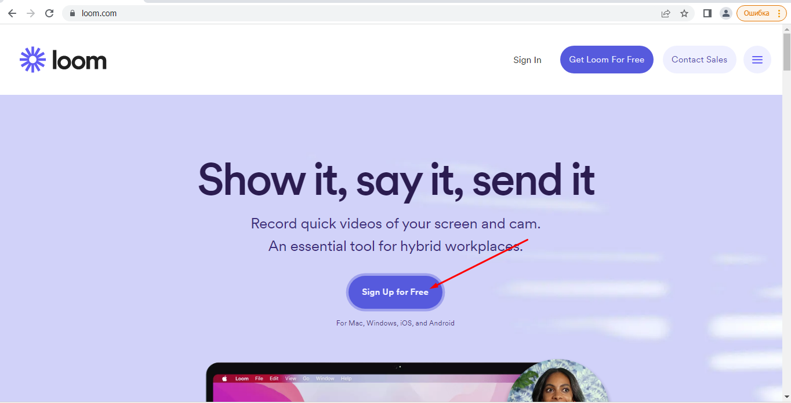
Найзручнішою формою для реєстрації є реєстрація через обліковий запис Google
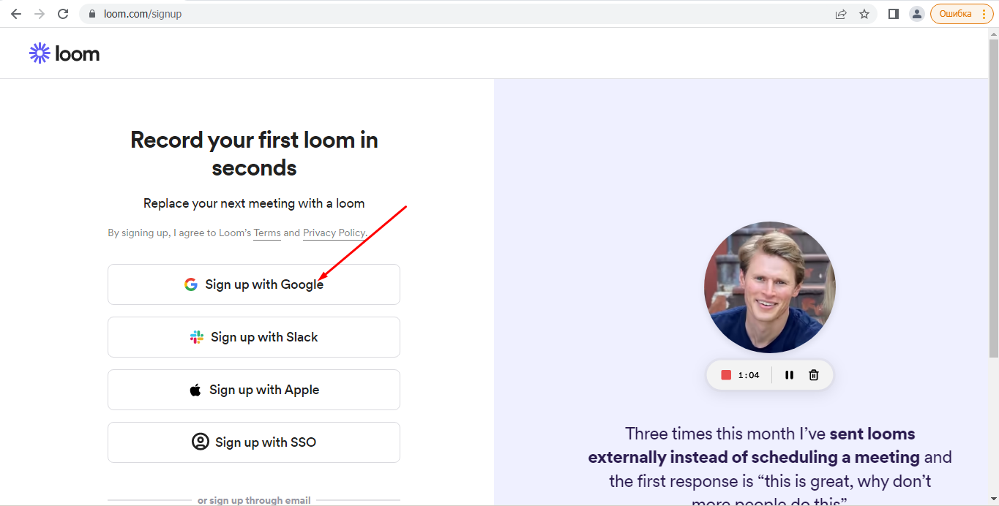
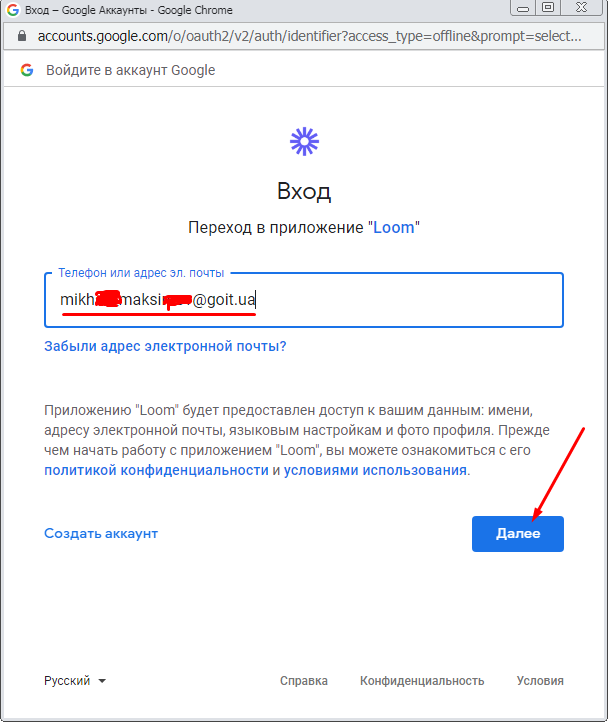

Для того, щоб зняти відео із власного екрану необхідно використовувать спеціальну програму, або сервіс. Можна використовувати програми Zoom, Monosnap або Captura.
Проте ми рекомендуємо використовувати сервіс loom через те, що, з одного боку, налоштовувати його дуже зручне, а з іншого він дозволяє зберігати до 25 відео на самому сервісі.
Зайдемо на сайт loom.com та натиснемо кнопку Sign up for free.
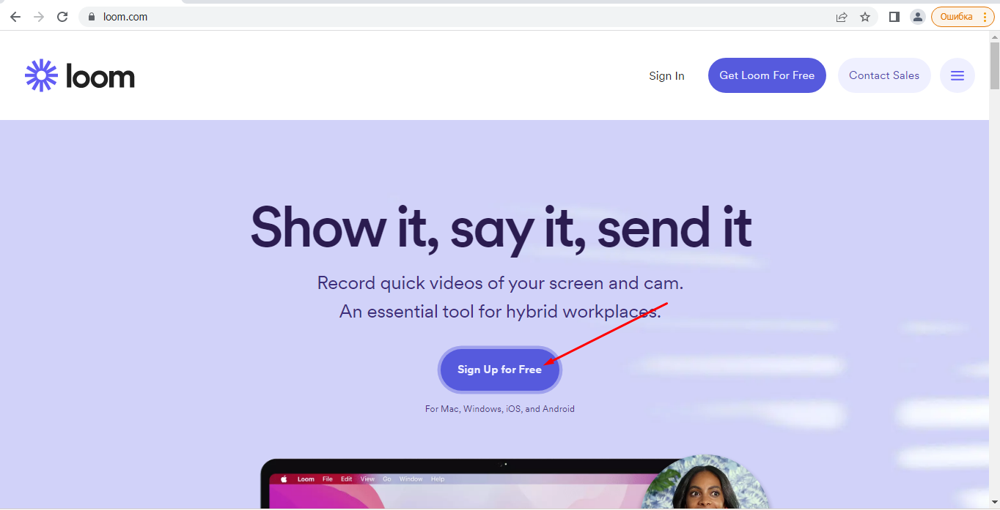
Найзручнішою формою для реєстрації є реєстрація через обліковий запис Google
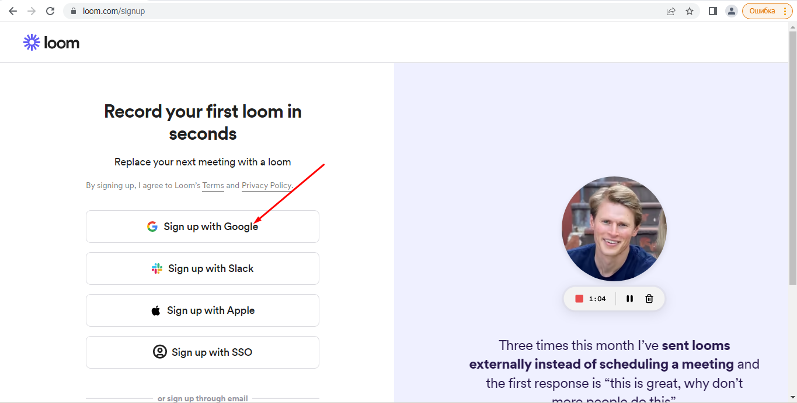
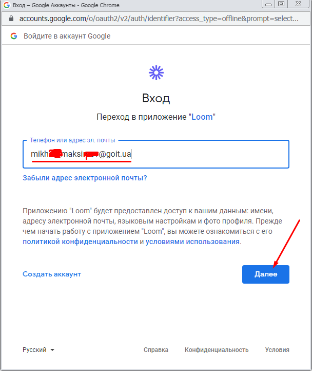
Натиснемо на кнопку New video
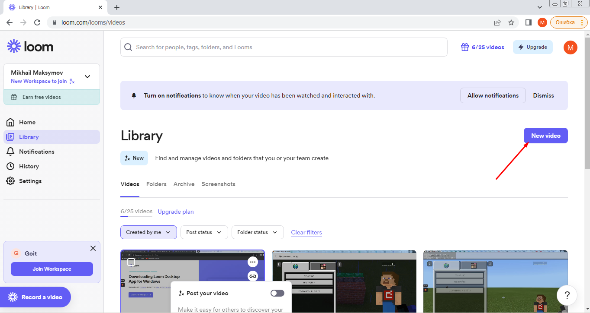
Оберемо пункт “Записати відео” (Record video)
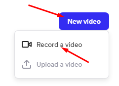
У вікні що з’явиться вкажемо пункт, що дозволить записувати лише екран “Screen nonly” (в подальшому ви можете записувати екран із вставкою веб-камери, або тільки записувати камеру).

Якщо ви плануєте записувати відео зі звуком перевірте, чи увімкнений у вас мікрофон.

Для початку запису натисніть кнопку Start Recordering

Якщо подібне повідомлення буде виведено свідчить про те, що ваш брузер забороняє використання мікрофону та камеру.

Оберіть частину екрану для запису (в нашому випадку оберіть весь екран).

Після того, як ви закінчили запис відео натисніть кнопку зупинки запису:

Після зупинки запису відо буде доступне на сервісі Loom. Якщо ви хочете переслати його своїм знайомим ви можете скопіювати поислання на відео:

Для того, щоб завантажити відео на YouTube вам необхідно його скачати із сервіса Loom.
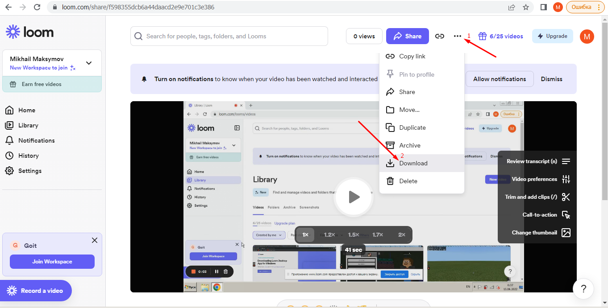
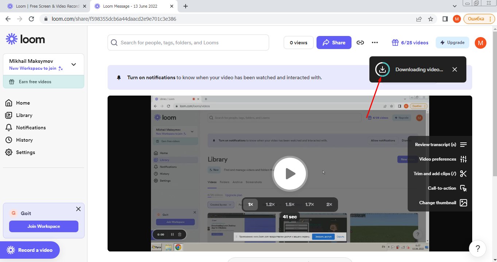
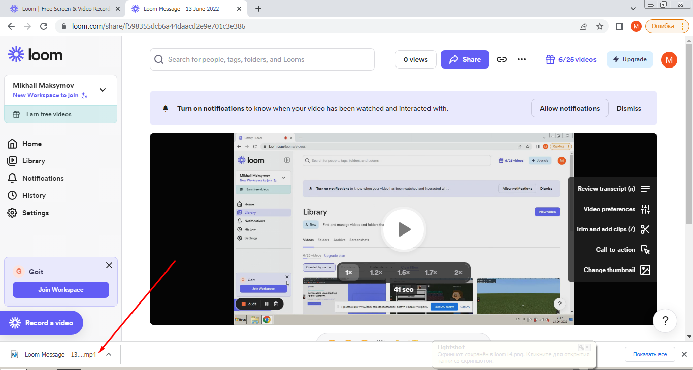
Перейдіть на сайт YouTube. Та оберіть пункт завантаження відео.
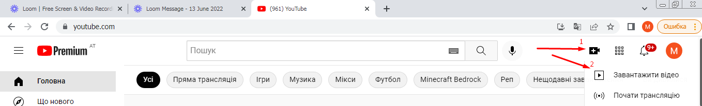
Натисніть кнопку “Вибрати файли”
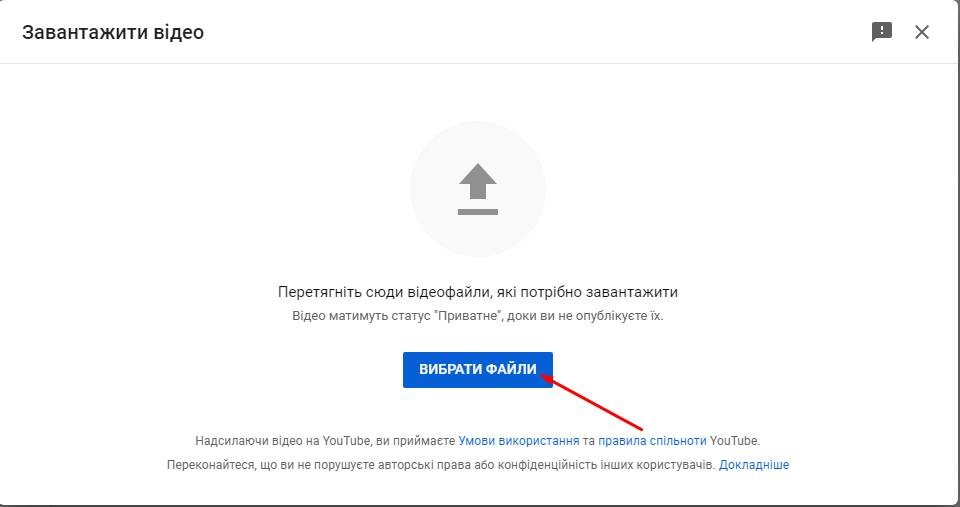
Знайдіть та виберіть скачаний тільки що відеофайл запису вашого екрану.
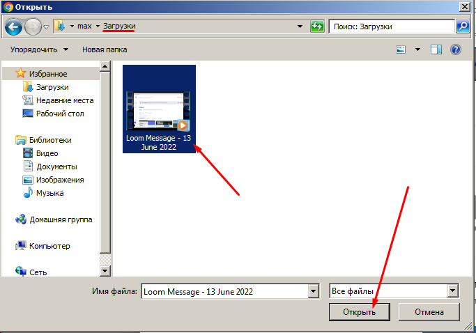
Вкажіть опис назву та опис відео

Оберіть тип відео (зазвичай “Ні, це відео не для дітей”).


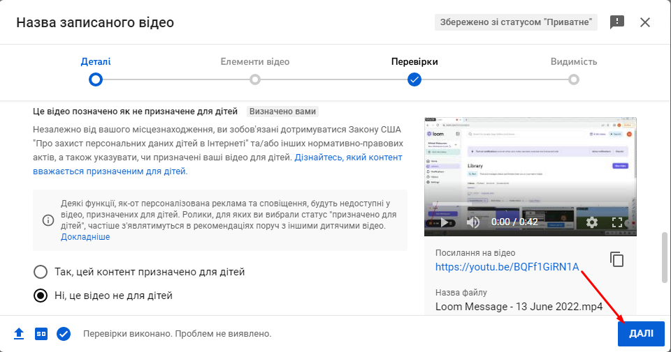
Вікно “Елементи відео” пропустіть (натисніть “Далі”). Проте в майбутньому в даному вікні ви можете додати субтітри та кінцеву заставку.

У вікні “Видимість” оберіть пункт “Не для всіх” він дозволить дивитись відео тим, хто має на нього посилання. Проте відео не буде присутнє в загальному пошуку YouTube. Після обрання типу відимості натисніть кнопку “Зберегти”.

Отримати посилання на відео на YouTube, можете натиснувши на відповідну кнопку.

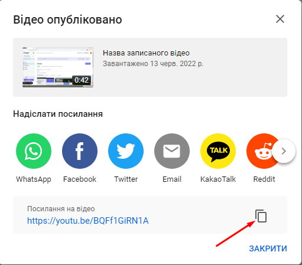

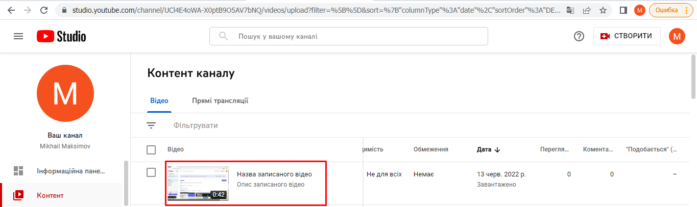